Visual Scripting
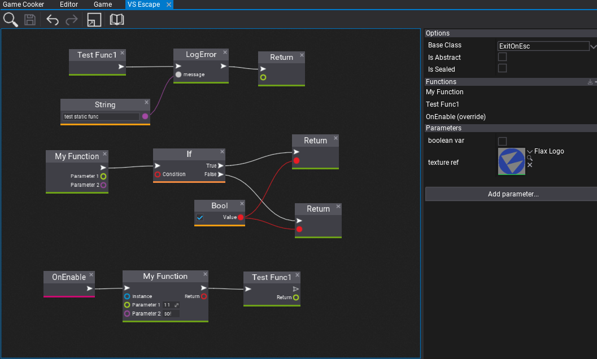
Flax Engine supports fully Visual Scripting with lots of great features such as: hot-reloading, full-API access, debugging, Visject Surface UI, and more. In general, Visual Scriptng offers more robust development for rapid prototyping while mainting solid performance.
Follow this documentation section to learn how to create your own visual scripts and use them in a game. Also, if you see any code examples in the Flax Documentation that are written in C# you can similarly use them in visual scripts since the engine uses the same API in all languages.
In this section
How to create Visual Script?
New Visual Script asset
Visual Script is an in-build binary asset that contains a graph with visual script nodes, properties and metadata. This graph is processed and executed at runtime by the engine. To create new Visual Script simply navigate to the Content directory, right-click and select option New -> Visual Script. Then specify it's name and confirm with Enter.
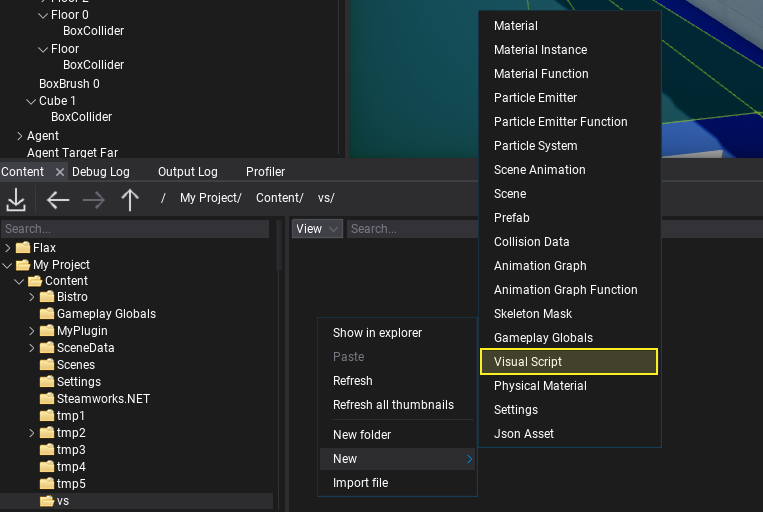
Now, editor allows you to pick the type of the visual script. You're asset will inherit from the specified base class. The default option is Script which fits in the most cases. You can also try extending Actor or any other type. Including custom game C++ and C# types for more robust scripting.
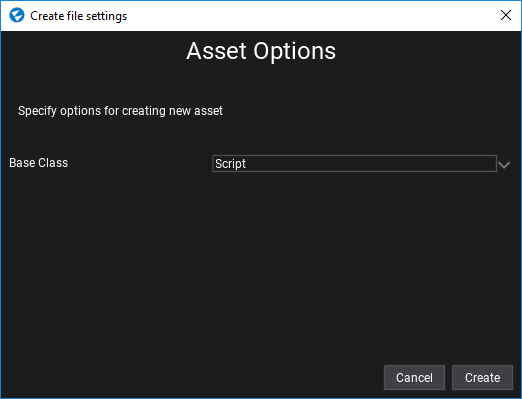
Confirm dialog with Create button and double-click on the asset icon to open the editor window.
Visual Script editor window
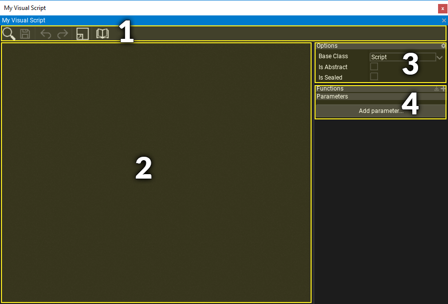
Visual Script editor window contains: 1) Toolstrip - utility buttons such as saving or undo control 2) Visual Surface - the nodes graph editor 3) Class Properties - visual script class settings 4) Class Members - visual script functions and properties.
Navigation controls
Controls in the Visual Script Editor generally match the controls of other tools in the Flax Editor.
Mouse controls
| Control | Action |
|---|---|
| RMB drag on background | Pan material nodes graph |
| RMB on background | Show node creation menu |
| RMB on node | Show node edit menu |
| LMB drag on background | Select nodes with rectangle tool |
| LMB on node | Select node |
| Ctrl + LMB on node | Toggle selection of node |
| LMB on node header | Move selected nodes |
| Mouse Wheel | Zoom in/out |
Keyboard controls
| Control | Action |
|---|---|
| Ctrl + S | Save the asset |
| Ctrl + A | Select all nodes |
| Delete | Delete selected nodes |
Adding new node
In order to add a new node right click on a surface background and select a node type from a popup or type its name to find it. Visual Scripts can use engine and game types API just like C++ and C# scripts. Also, when hovering the items with a mouse cursor the tooltip will show the documentation comments with details of every node.
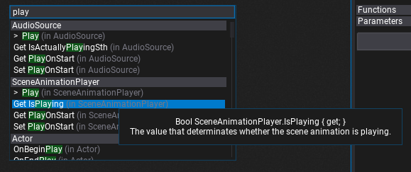
Visual Scripting with Flax
Visual Scripts can override base class methods, have custom properties and methods full of visual code. To understand some basic concepts let's create a simple script that prints the custom message to the log when user clicks the mouse button.
Firstly, create a new Visual Script (like in the tutorial above). Then open it and override the OnUpdate method - it's called on active scripts during every game update so we can use it to update the game logic.
To override method you can use the special button on the script functions list in the Class Members panel, or type the function name in the context menu and select the one under Method Overrides category. Both ways are correct.
| Use button | Use context menu |
|---|---|
| 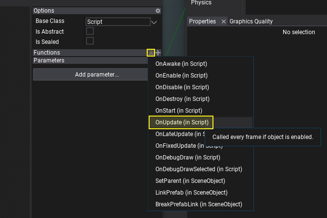 | 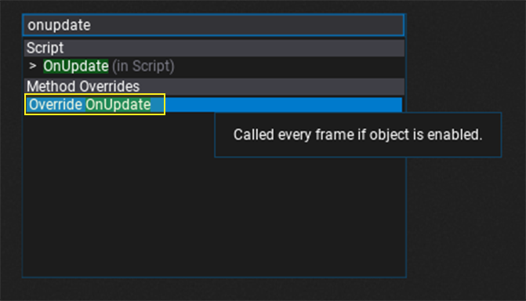 |
Now, we can use the function output impulse box to run custom script logic.
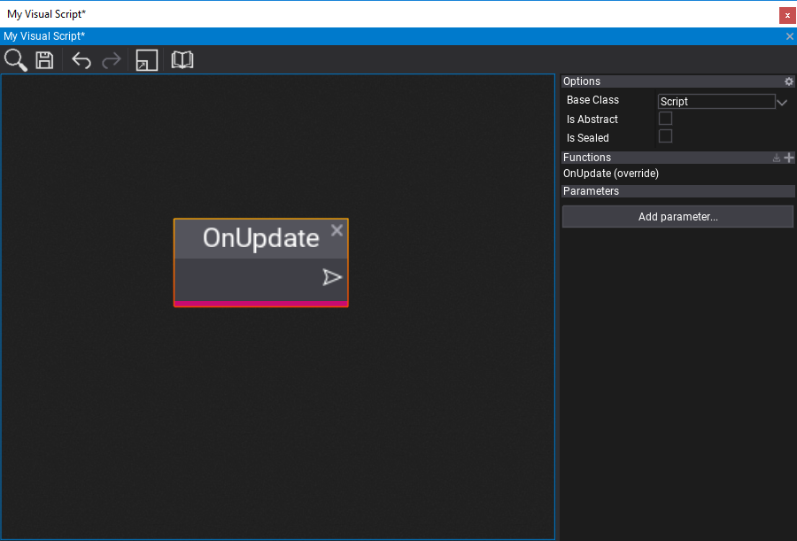
Note
See that all functions in the script graph are listed under the Functions group inside the Class Members panel. You can use it to easily navigate to them or edit them.
Next step is to add If node that will use GetMouseButton method (from Input class) result as a Condition. You can right-click on GetMouseButton node and press Convert to pure method. This will change the method to not use input and output signals, which is useful for typical getter nodes that just return the state value. Set button to Left as input for GetMouseButton to check when that button goes down (is clicked by the user).
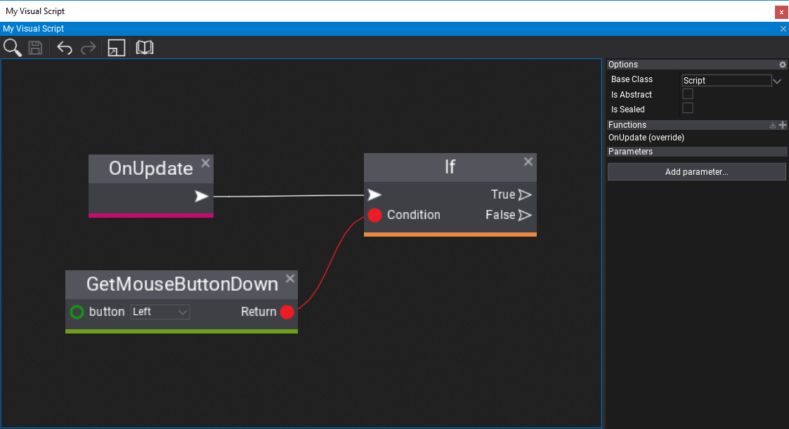
Then, let's add a property to the script with a message to print. To do this, press Add parameter... button and select the type of the parameter - use String in this example. Then double-click on the New parameter name label to rename it to Message.
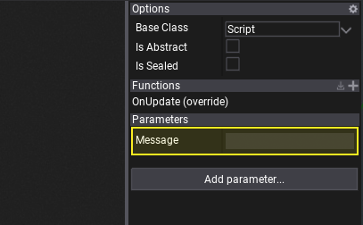
Here you can specify the default message text we gonna print. It can be set also on instance of this script after adding it to the actor on the scene.
Finally, let's use Log method from Debug class that prints the custom message.
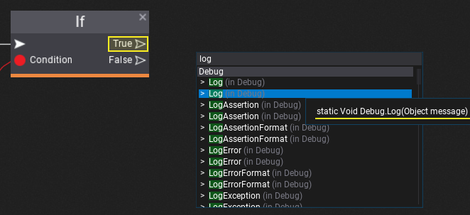
Then, connect it with True output of the If node that so the Log will be executed when user clicks the mouse button. Add Get Message node or drag and drop your new parameter into the surface to connect its value with the message input in the Log method.
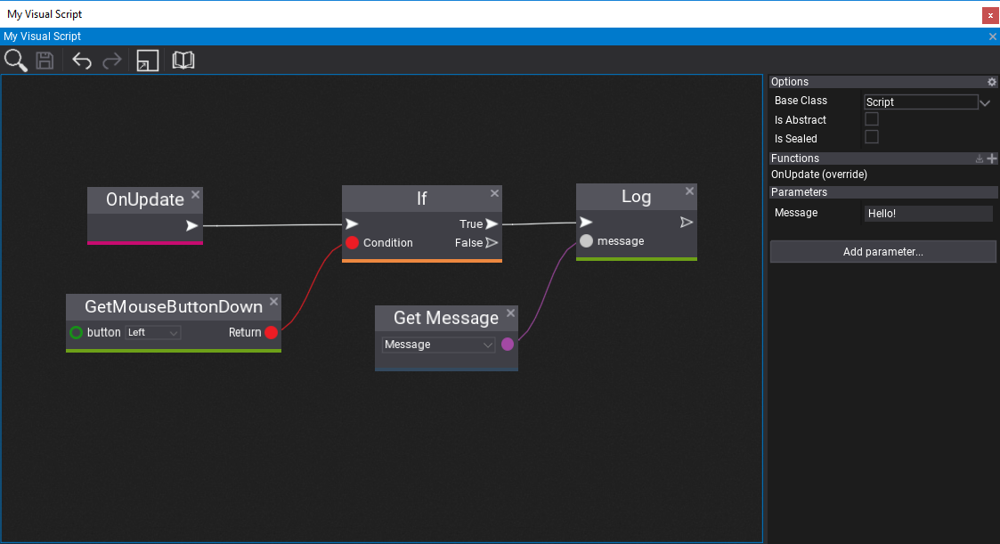
The last step is to add this script to an actor on the scene, set the Message property, and hit play to see the results! Every time user clicks the given mouse button it prints the custom log message.
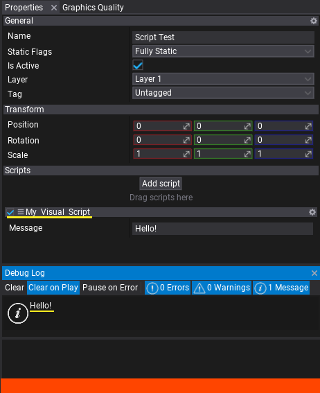
Feel free to start coding your game logic in Visual Scripting language! Also, since Visual Scripting uses C# API of the engine you can use this API reference.
Events in Visual Scripts
When working with physics and gameplay you might want to handle collision or trigger events inside VIsual Script. To see how to do it follow this documentation section related to Events.
Interop with C++
To call Visual Script from C++ you can do it as in the following example:
#include "Engine/Content/Assets/VisualScript.h"
..
VisualScript* myScript = ..; // Assign it from editor or load asset manually
ScriptingObject* instance = nullptr; // Null for static methods, assign to object instance to call member function
Span<Variant> parameters; // Here you can pass parameters to the function
Variant result = VisualScripting::Invoke(myScript->FindMethod("My Func"), instance, parameters);